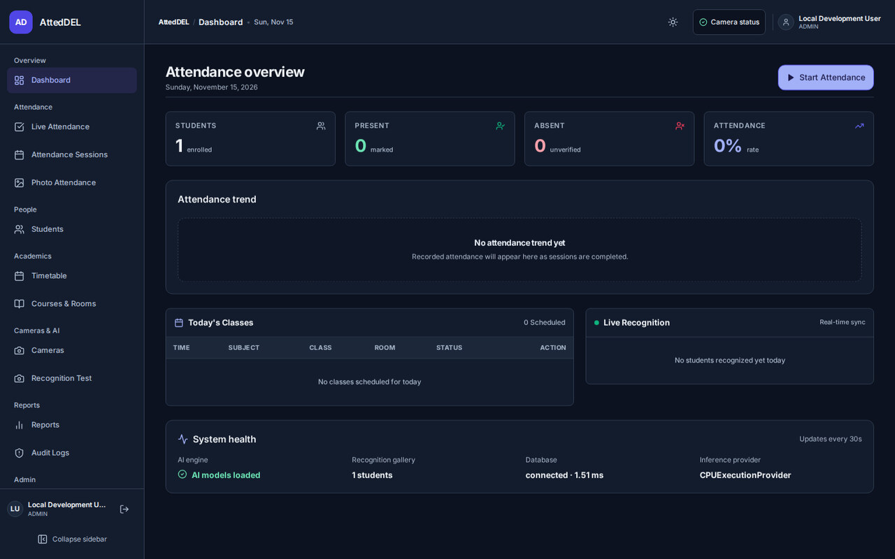

Full-stack application
AttedDEL
Faculty can review a class roster, correct individual records, and export attendance reports. A separate photo tool locates faces without recording attendance.
See the reporting screen ↗ View source for AttedDEL